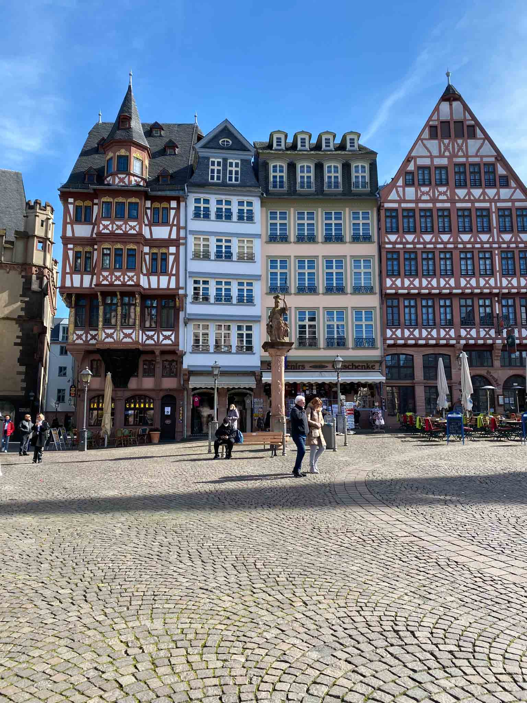
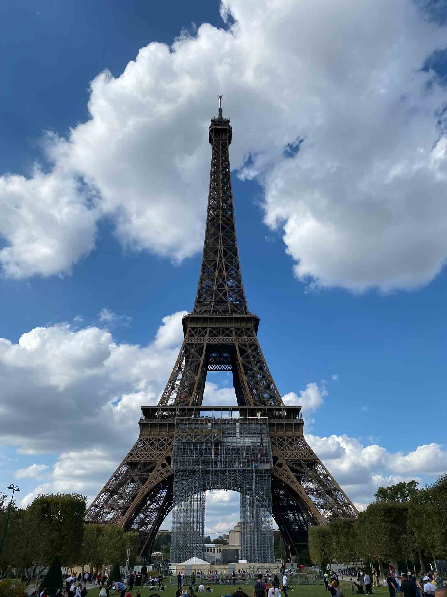

Costa Rica
Costa Rica habe ich auf einer 3-wöchigen Reise im Oktober 2022 bereist, also mitten in der Regenzeit.
Deutschland
Deutschland ist für mich mehr als nur ein Reiseland. Egal ob Großstadt oder Natur – hier gibt es immer etwas zu erkunden.
Frankreich
In Frankreich gibt es eine reiche Kultur von Landschaften an der Cote d'Azur bis hin zur Metropole Paris, ist für jeden etwas dabei.

Island
Island ist ein Land voller Kontraste - Feuer und Eis, rau und wunderschön zugleich - Ein richtiges Abenteuer!
Italien
Das Land bietet an jeder Ecke wunderschöne Landschaften, Kultur und tolles Essen.

Japan
Japan vereint Tradition und Moderne wie kein anderes Land. Insgesamt verbrachte ich zwei Wochen in diesem abwechslungsreichen Land.

Kambodscha
2022 habe ich hier die Tempelanlage Angkor Wat besucht - ein atemberaubendes Erlebnis.

Niederlande
Malerische Grachten, wunderschöne Architektur und faszinierende Geschichte - das alles kann man ganz einfach in Amsterdam eleben.

Österreich
Malerische Alpen, entspannte Bergseen, atemberaubende Wanderungen und eine Millionenstadt - das alles vereint Österreich.

Portugal
Portugal fasziniert mit atemberaubenden, einsamen Stränden und meterhohen Wellen. Ein Spaß für die ganze Familie!

Schweden
Schweden habe ich im Dezember besucht, hier war ich bei einem Städtetrip in Stockholm. Es war gerade die Woche des Nobelpreises.

Spanien
Spanien habe ich bisher nur im Rahmen eines Städtetrips nach Barcelona kennengelernt - welche zu meinen Top 3 Städten der Welt gehört.

Thailand
Thailand ist kein geheimer Reisetip und sehr touristisch aufgeschlossen. Hier findet man sich einfach zurecht und wird belohnt mit tollen Stränden.